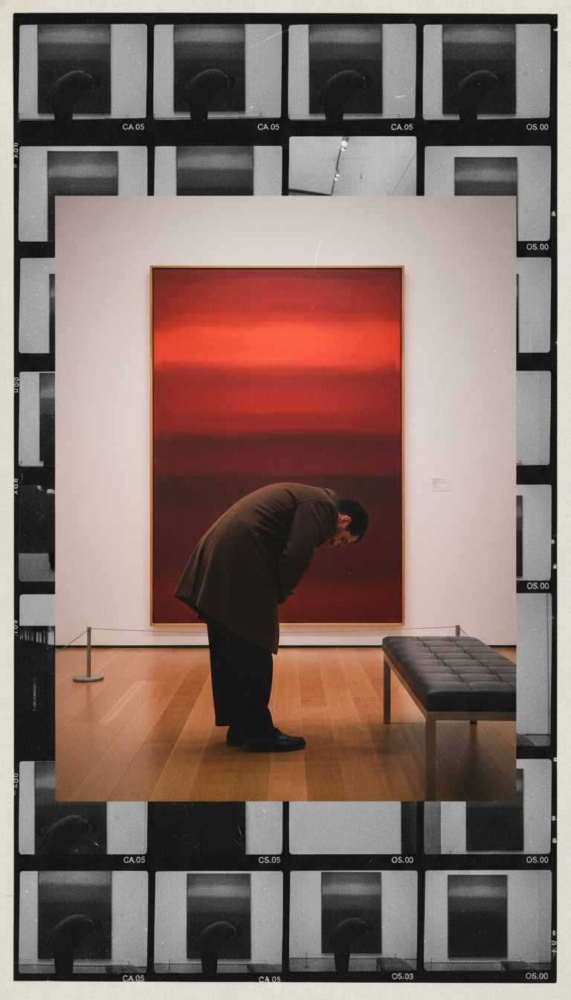

Streamline your visual asset management and automate creative distribution with precision through the official Pinterest API.
Exhibiting the type of high-standard visual assets PINFLOW was designed to manage, archive, and distribute. Provenance from a creator to creators.

* These represent the quality of professional visual content PINFLOW handles daily in a production environment.
REVISION PINFLOW (the "App") respects your creative autonomy and is committed to protecting your professional data in accordance with global privacy standards.
The App accesses the following through the Pinterest API (OAuth 2.0):
This access is used exclusively to facilitate your creative workflow—allowing you to manage boards and publish pins directly from the PINFLOW dashboard.
We do not sell, trade, or track your creative output. Your Pinterest distribution strategy remains strictly confidential.
By utilizing REVISION PINFLOW, you agree to a professional standard of platform usage.
You are solely responsible for the content published through this tool. All assets must comply with Pinterest’s Community Guidelines and Intellectual Property policies.
This tool is an interface for the official Pinterest API. Usage is subject to Pinterest's platform rate limits and terms. We are not liable for account actions resulting from violations of Pinterest's terms of use.
PINFLOW is designed for creative management and efficient archiving. Any use for spamming or violating platform rules is strictly prohibited.
PINFLOW does not maintain persistent user databases. To revoke permissions or disconnect your account, simply follow Pinterest’s standard security protocol:
Once you complete these steps, the App will no longer have access to your data, and your active local session will be invalidated immediately.
If you wish to request information regarding your data or associations with REVISION PINFLOW, please reach out to our professional support team:
We process professional inquiries within 24-48 hours. Please note that since we do not store your media or logs internally, inquiries primarily concern session data management.